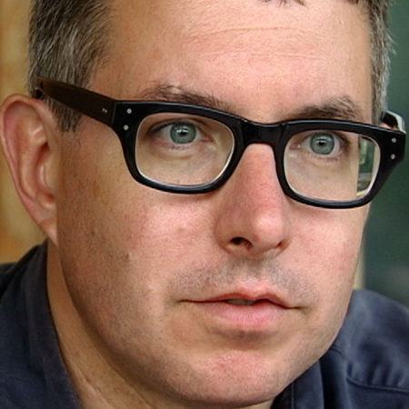

Building on a history of works themed around archaeological digs, Mark Dion presents the artifacts of an archaeologist's office. Tools, equipment, papers, and work are laid bare for examination, presented as though they were still in use. One can imagine that the archaeologist to whom it belongs has merely stepped out of the room, and may be back momentarily to explain what you're looking at.
There is a twist, however; there is no archaeologist. Every object in the scene was sourced from across chicago, from a wide variety of people and places, and then arranged to appear like the office of an archaeologist. The appearance of an office laid bare for examination is purely fabricated, and in the revealing of this, the museum-goer is invited to consider how similar things could be fabricated- Are there parts of history that are constructed of disparate pieces to give a specific impression, the way this office is constructed of disparate items? How is history made, and by whom?
[Here, a fiction is told by granting characters and roles to objects, assuming identities with the ease of trained actors by the simple act of arrangement.]
" TEXT TAKEN DIRECT FROM WIKIPEDIA, NOT MY WORK.
Dion was born in August 28, 1961, New Bedford, Massachusetts, to a working-class family. He spent his early childhood in New Bedford before relocating to Fairhaven, Massachusetts, where he was mostly raised. Dion credits the museums and historical architecture in both towns, such as the New Bedford whaling museum, in helping spark his interests.
Dion began attending the University of Hartford Art School in 1981. He concurrently took classes at the School of Visual arts in New York from 1983 till 1984 and later participated at the one-year Independent Study Program of the Whitney Museum of American Art, where he studied with conceptual artists Joseph Kosuth and Hans Hacke, and media artist Barbara Kruger. There, he was encouraged by faculty to utilize interdisciplinary approaches that would afford a unity of his wide-ranging interests, and he began creating installations inspired by his passion for research and collecting.
Dion took classes in biology at City College and attended several reading seminars to develop a concrete science foundation. He worked with fellow students Gregg Bourdowitz, Jason Simon, Craig Owens.
Dion experienced financial issues while attending school, leading him to work thirty hours a week as an art conservator in SoHo, Manhattan that specialized in nineteenth century American art. Although, Dion credits his time there as helping him see representations as objects, saying "Working in the studio, one would see an object in the middle of its life. I found that incredibly interesting."
Dion received his Bachelors of Fine Arts from the degree in 1986.
Dion has received several Honorary degrees, including an honorary doctorate in Philosophy from the University of Hartford in 2003, an Honorary Fellowship of the Falmouth University (2014) and an Honorary Doctorate of Humane Letters (Ph.D.) from the Wagner Free Institute of Science in Philadelphia (2015).